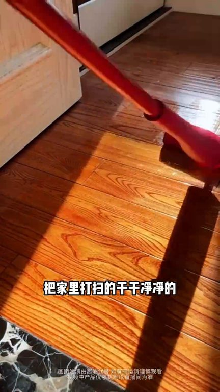
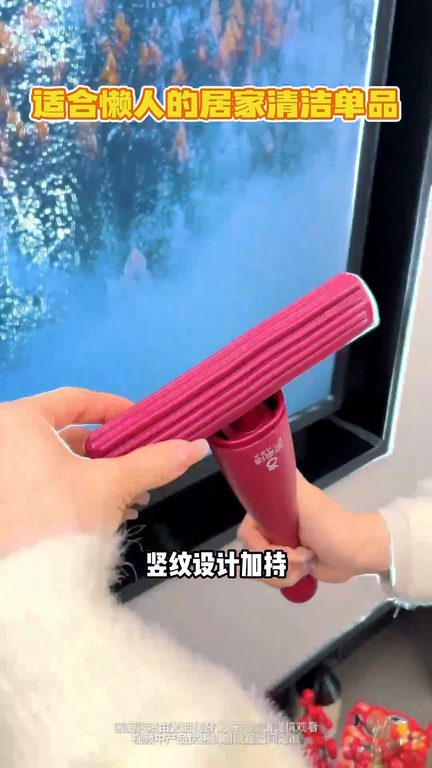
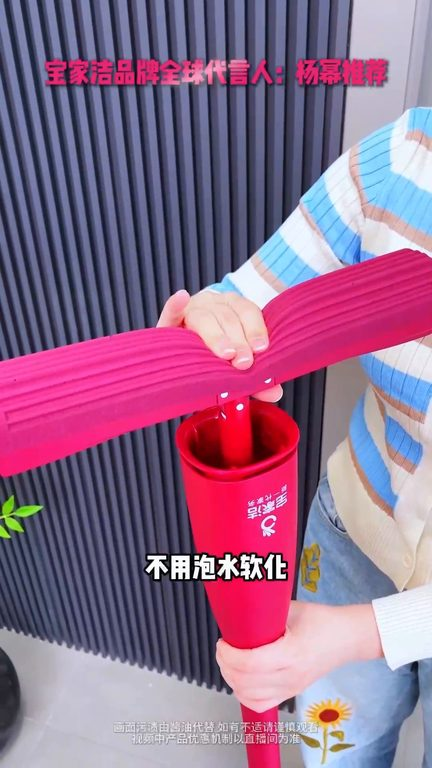
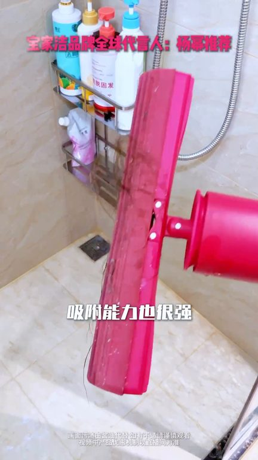

TOP 1 · 代表素材深度拆解
核心放量 强点击
视频为原始素材 HTTPS 链接；点击后加载，建议在网络环境良好时播放。
35.3万素材消耗
4.22%CTR
44.0%类目消耗占比
+1.61pp较类目均值
表现判断
该素材是类目内第 1 名，属于“核心放量”；CTR 高于类目均值。消耗体现承接规模，CTR 体现首屏与定向效率，两项应结合判断，不能仅以单指标下结论。
表达标签
口播三段式证据
开场钩子我是一个特别爱干净的人一年三百六十五天除了工作唯一的爱好就喜欢把家里打扫得干干净净的这样非但没有感到累反而觉得是种乐趣平时打扫卫生
中段论证直接让我家告别了妈补实弹软软淡淡的棉头清洁力抄在线数文设计加持不管是水字残渣还是勤为油污一拖就干净擦灶台擦台面都特别省心长干设计手也不会粘到脏东西和清洁剂清洗更是简单水下一冲轻轻推两下就干干爽爽不容易留意味之前总觉得清洁工具都差不多这款真的刷新我认知它的长久的棉柔性和吸水性一定要靠触摸才能感受到摸着就感觉像气猪蛋糕是的很软的很多朋友的家里比如说马桶旁边其实是…
结尾转化欧柯棉拖把这款拖把能轻松应对各种复杂的地面情况而且它吸水能力也是超强的不管是地上的水质还是不小心打翻的饮料轻轻一拖就干净了这可真的再多水都不用担心了而是对家里毛发的吸附能力也很强模子也是易冲即进搭配360度全包括是集水设计集水轻松无压力你看还挤得特别干净全程都不用脏手
有效点
- CTR 4.22% 高于类目均值 2.61%，开场或人群指向具备点击优势
- 包含使用或实测表达，能够把抽象卖点转化为可感知证据
迭代动作
- 保留当前高效钩子，复制 3 个变量版本：人物、首句和首帧分别单变量测试
- 视频时长偏长，建议剪出 30–45 秒短版，仅保留钩子、两项证据和一次 CTA
- 复核功效、绝对化及价格稀缺措辞；增加适用边界和效果因人而异提示
合规关注

钩子建立 · 8.2s

场景/问题展开 · 61.8s

卖点证据 · 142.3s

转化收口 · 196.0s
查看完整口播摘要
我是一个特别爱干净的人一年三百六十五天除了工作唯一的爱好就喜欢把家里打扫得干干净净的这样非但没有感到累反而觉得是种乐趣平时打扫卫生我最喜欢用的就是这个欧可棉拖把它可不是胶棉拖它是晒干不会变硬的新型欧可棉拖把它比胶棉拖更灵活拖把头可以弯折边边角角都能贴合轻易各种缝隙都能自由进出棉拖不用泡水你们不会洗完澡还在用手果掉落的头发吧我都是用保家杰的欧可棉拖把用它收拾浴室的泡沫水质收拾马桶边边的卫生死角就是这么方便领抢毛发碎械粘上边用水一冲就会掉这个欧可棉拖把从279降到199你不买又从199降到159你还是不买不买就对了这次中年庆活动大言人杨蜜给你送福利了入手前还觉得没必要用过后我是真的服气这款欧可棉迷你小拖把直接让我家告别了妈补实弹软软淡淡的棉头清洁力抄在线数文设计加持不管是水字残渣还是勤为油污一拖就干净擦灶台擦台面都特别省心长干设计手也不会粘到脏东西和清洁剂清洗更是简单水下一冲轻轻推两下就干干爽爽不容易留意味之前总觉得清洁工具都差不多这款真的刷新我认知它的长久的棉柔性和吸水性一定要靠触摸才能感受到摸着就感觉像气猪蛋糕是的很软的很多朋友的家里比如说马桶旁边其实是很难打理的因为它有下水的地方保家姐就可以完全照顾到很多的角落扎发后面然后床头柜的旁边然后床下面这些死角都可以轻松解决可能是你们太有钱了所以看不上我们这次直降120的活动一开始很多宝宝都是因为颜值买单而且这个保密礼盒真的好惊喜不是平时买不起而是源头工厂更有性价比以前的价格可能确实有点贵现在保家姐直接自建工厂把黑科技欧柯棉的价格打下来了不要279也不要199连159都不要的欧柯棉拖把请您听着您在人的面说来给大家送祝您福利梁比老师太棒了保家姐棉头不发印的欧柯棉随时打开随时拖不用泡水软化把家里油膩膩的厨房都是毛发泡沫的卫生间都打扫干净而且拖把头升级灵活旋转的关节清洁就没有卫生死角不用搬上搬下脏了只需要在水底下冲洗就干净推拉集水特别干爽用完还能站立收纳每关不占地拍下随时发火千万别错过当初我说要买海棉拖把我老婆非要买欧柯棉拖结果用了以后才发现是真香推保家姐的老粉我真的太激动了回购了N加依次的保障品牌居然请到了阳密代言必须把这份快乐分享给你们这次的保密礼盒我一看到就立马入手了礼盒里的阳密限定款草莓香欧柯棉拖把这款拖把能轻松应对各种复杂的地面情况而且它吸水能力也是超强的不管是地上的水质还是不小心打翻的饮料轻轻一拖就干净了这可真的再多水都不用担心了而是对家里毛发的吸附能力也很强模子也是易冲即进搭配360度全包括是集水设计集水轻松无压力你看还挤得特别干净全程都不用脏手